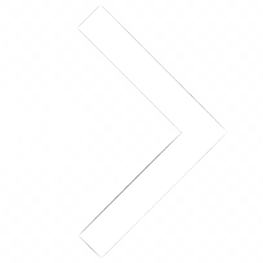

Земля

Земля — третья планета от Солнца и крупнейшая в земной группе. Уникальные условия Земли позволили развиться на планете жизни.
Атмосфера Земли состоит из азота (78%), кислорода (21%), углекислого и других газов (1%). Кислород и азот — необходимые вещества для строительства ДНК. Озоновый слой атмосферы поглощает солнечную радиацию. Кислород на Земле синтезируют растения из углекислого газа. Не будь их, наша планета напоминала бы Венеру. С другой стороны, некоторое количество CO2 в атмосфере обеспечивает на Земле комфортную для жизни температуру.
70% поверхности Земли покрыты водой. В отличие от Луны и Меркурия, на Земле очень мало кратеров. Учёные считают, что они исчезли под воздействием ветра и эрозии почвы.
Из-за наклона Земной оси (23,45°) на Земле хорошо различимы сезоны года. Для оборота вокруг своей оси Земле требуется чуть менее 24 часов — это самый короткий день среди планет земной группы.
Земля имеет спутник — Луну. Её размер составляет ¼ земного диаметра, что довольно много для спутника. Притяжение Луны влияет на земную воду, вызывая приливы и отливы. Вращение Луны вокруг своей оси и вокруг Земли синхронно, поэтому Луна всегда обращена к Земле только одной стороной.
Земля — единственная планета, название которой не связано с мифологией. И русское «земля», и английское «earth», и латинское «terra» обозначают почву или сушу.